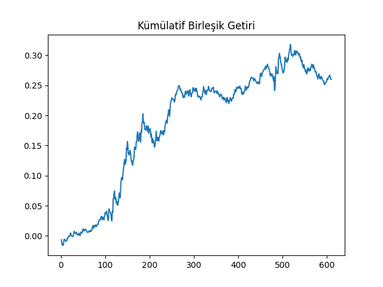

Döviz Kuru Ticareti
Eğer döviz kurları üzerinden al/sat yapmak istersem bunu koentegrasyon üzerinden nasıl yaparım? Aynen iki hissenin fiyatının koentegre olabilmesi gibi, iki ülkenin dövizi de koentegre olabilir. Bu koentegrasyon tabii ki bu dövizlerin kurlarına yansıyacaktır, ve bu kurların üzerinden alım / satım yaparsak o koentegrasyona oynamış oluruz. Daha önce gördüğümüz ETF örneğini genişletmek gerekirse, Avustralya ve Kanada'nın ETF'leri koentegre idi, herhalde onların döviz kurlarının da koentgre olduğunu beklemek anormal olmaz. Bu hakikaten böyle. Ama ondan önce döviz ticareti hakkında bazı pürüzler.
Döviz ticareti hisse ticaretinden biraz farklı. Mesela AUD.ZAR (Avustralya doları ve Güney Afrika randı) ticareti yapıyorsak, bunlardan birincisi baz dövizi (base currency) diğeri kayıt dövizi (quote currency) olarak biliniyor. Hatırlamanın iyi bir yolu baz'ın b'si kayıtın k'sinden önce gelir. Eğer AUD.ZAR 9.58'den kayıtlıysa bir AUD almak için 9.58 ZAR gerekir. Eğer 100,000 AUD.ZAR alıyorsak önceki kayıt fiyatından 100,000 x 9.58 = 958,000 ZAR satmak gerekir.
Fakat çoğu zaman aracı kurumlar AUD.ZAR kurunu sağlamazlar. Bu yüzden X Avustralya doları AUD.ZAR alabilmek için X birim B.ZAR alıp X birim B.AUD satmak gerekir, ki burada B başka bir baz döviz olacaktır. B çoğunlukla likiditesi yüksek olan rahatça alınıp satılabilecek bir dövizden seçilir, mesela USD (dolar) ya da EUR (avro) gibi.
Alttaki dosyaları almak için [1]'e bakınız.
import pandas as pd, os, sys
from scipy import io as spio
cols = ['tday','cl','lo','hi','hhmm','op']
base = '%s/Dropbox/Public/data' % os.environ['HOME']
a = spio.loadmat(base + '/inputData_USDCAD_20120426.mat')
usdcad = pd.concat([pd.DataFrame(a[x]) for x in cols], axis=1)
usdcad.columns = cols
a = spio.loadmat(base + '/inputData_AUDUSD_20120426.mat')
audusd = pd.concat([pd.DataFrame(a[x]) for x in cols], axis=1)
audusd.columns = cols
usdcad2 = usdcad[(usdcad.tday>20090101) & (usdcad.hhmm == 1659)]
audusd2 = audusd[(audusd.tday>20090101) & (audusd.hhmm == 1659)]
usdcad2 = usdcad2.set_index(['tday','hhmm'])
audusd2 = audusd2.set_index(['tday','hhmm'])
cad = 1 / usdcad2.cl
aud=audusd2.cl
y = pd.concat([aud, cad],axis=1)
sys.path.append('../tser_coint')
sys.path.append('../tser_draw_sharpe')
from johansen import coint_johansen
import dd
trainlen=250
lookback=20
numUnits = np.ones(len(y))*np.nan
hedgeRatio = np.ones(y.shape)*np.nan
for t in range(trainlen,len(y)):
df = y[t-trainlen:t]
hedgeRatio[t] = coint_johansen(df, 0, 1).evec[:,0]
tmp1 = np.array(y[t-lookback:t])
tmp2 = np.kron(np.ones((lookback,1)),hedgeRatio[t])
yport = np.sum(tmp1*tmp2,axis=1)
ma=np.mean(yport)
mstd=np.std(yport)
zScore=(yport[-1]-ma)/mstd;
numUnits[t] = -(yport[-1]-ma)/mstd
#break
# copy positions in multiple coumns. positions are market values
# of AUDUSD and CADUSD in portfolio expressed in US.
tmp1=np.kron(np.ones((y.shape[1],1)),numUnits)
positions = tmp1.T * hedgeRatio * y
pnl = positions.shift(1) * (y - y.shift(1)) / y.shift(1)
pnl = pnl.sum(axis=1)
ret=pnl / np.sum(np.abs(positions.shift(1)),axis=1)
ret = ret[trainlen:-1] # trainlen kadar ilk bolumu disarida birak
cumret=np.cumprod(1+ret)-1
print 'APR', ((np.prod(1.+ret))**(252./len(ret)))-1
print 'Sharpe', np.sqrt(252.)*np.mean(ret)/np.std(ret)
print 'Dusus Kaliciligi', dd.calculateMaxDD(cumret)
APR 0.100221828618
Sharpe 1.44796592471
Dusus Kaliciligi (-0.050369126045008095, 158.0)
plt.plot(np.cumprod(1+ret)-1)
plt.title('Kümülatif Birleşik Getiri')
plt.savefig('tser_curr_01.png')

Kaynaklar
[1] Chan, Book Code, https://github.com/burakbayramli/books/tree/master/Algorithmic_Trading_Chan
[2] Chan, Algorithmic Trading
Yukarı